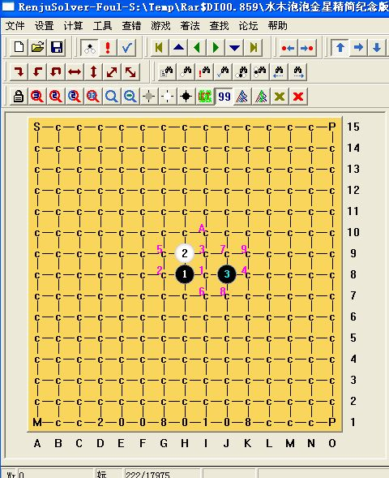

水木泡泡金星精简纪念版（两打）
#1 水木泡泡金星精简纪念版（两打）作者：逆刃 发表时间：2008-4-21 22:58:59

见附件！
 水木泡泡金星精简纪念版.rar
水木泡泡金星精简纪念版.rar#2 Re:水木泡泡金星精简纪念版作者：五子天下 发表时间：2008-4-22 9:17:55
慢慢看来~
#3 Re:水木泡泡金星精简纪念版（两打）作者：walker 发表时间：2008-4-22 17:03:57
厉害！高！
3圈够了。如果第3圈能必胜(必输)的话，还没有看到第4圈及以外的圈不能必胜(必输)的。
#4 Re:水木泡泡金星精简纪念版（两打）作者：牛文涛 发表时间：2009-3-9 23:17:54
这个比较实用 谢了先
#5 Re:水木泡泡金星精简纪念版（两打）作者：越狱行辕 发表时间：2009-6-15 15:52:08
金星地毯不是早就发布了么，杂看见最近发那个金星地毯迟迟看不见#6 Re:水木泡泡金星精简纪念版（两打）作者：gerbo 发表时间：2009-6-15 17:09:20
原来有了哈..我凌晨发的那个估计太大了,重复占用资源..这个也挺好的.#7 Re:水木泡泡金星精简纪念版（两打）作者：wrwak 发表时间：2009-6-15 18:52:16
楼上的应该更实用#8 Re:水木泡泡金星精简纪念版（两打）作者：wrwak 发表时间：2009-6-15 19:45:55
lz的也就前4步c多，后面的都不能算C#9 Re:水木泡泡金星精简纪念版（两打）作者：方圆之外 发表时间：2009-6-20 12:34:05
这应该算早以前的东西了吧。。
水木泡泡都多长时间没见他下棋了。。这东西估计早有了。
#10 Re:水木泡泡金星精简纪念版（两打）作者：起航 发表时间：2009-8-17 0:53:00
呵呵，下载回去看看。